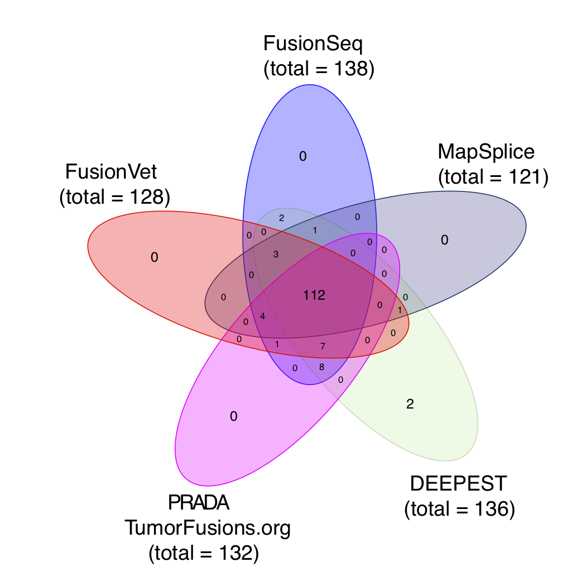
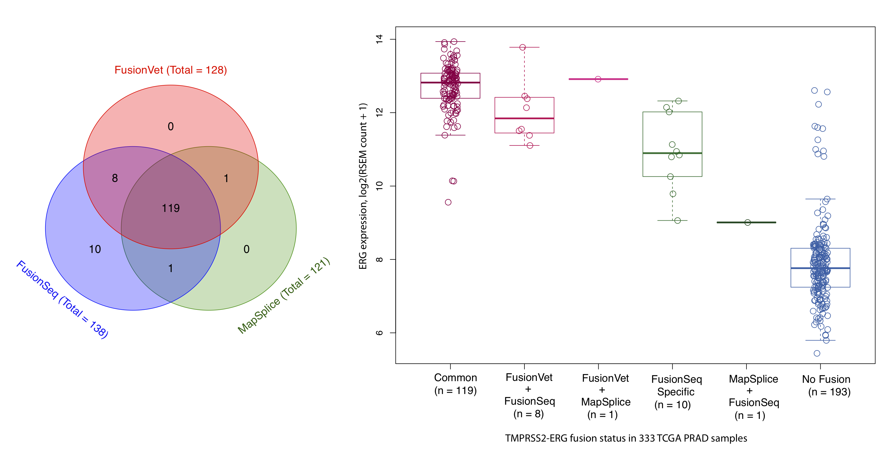
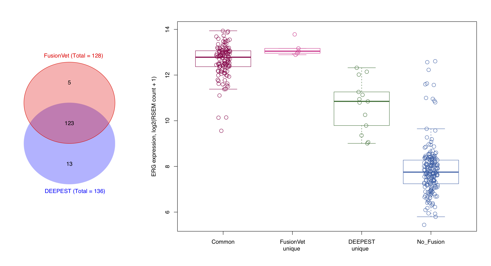
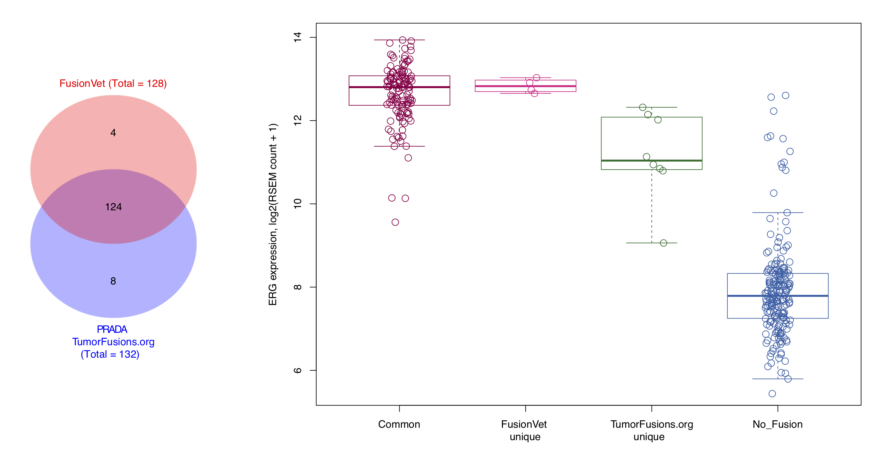

6. Performance¶
6.1. Speed¶
FusionVet is very efficient. It took about 1 second to examine 1 fusion in a typical TCGA BAM file (7.1 Gb, 184 million reads)
6.2. Comparison to other tools¶
We used FusionVet to detect ERG-TMPRSS2 fusion from the 333 TCGA prostate cancer samples. A sample is called ERG-TMPRSS2 fusion positive if it has two or more supporting fragments.
We then compare FusionVet result to:
FusionSeq-HighSens (Sboner et al., Genome Biology, 2010)
MapSplice (Wang et al., Nucleic Acids Res. 2010)
DEEPEST (Dehghannasiri et al., PNAS 2019)
PRADA (tumorfusions.org) (Hu et al., Nucleic Acids Res. 2018)
We chose FusionSeq-HighSens and MapSplice because they were used in the original TCGA Cell paper. We chose DEEPEST and PRADA because they were newly developed and have demonstrated superior performance to other tools.
{kind=link}
It has been found that ERG expression is significantly increased in fusion positive samples through the TMPRSS2 (an androgen responsive gene) mediated over expression (Tomlins et al., Science, 2005). Therefore, we used ERG expression as an indirect measurement of the authenticity of ERG-TMPRSS2 fusions.
FusionVet vs FusionSeq/MapSplice
{kind=link}
FusionVet vs DEEPEST
{kind=link}
FusionVet vs PRADA(TumorFusions.org)
{kind=link}